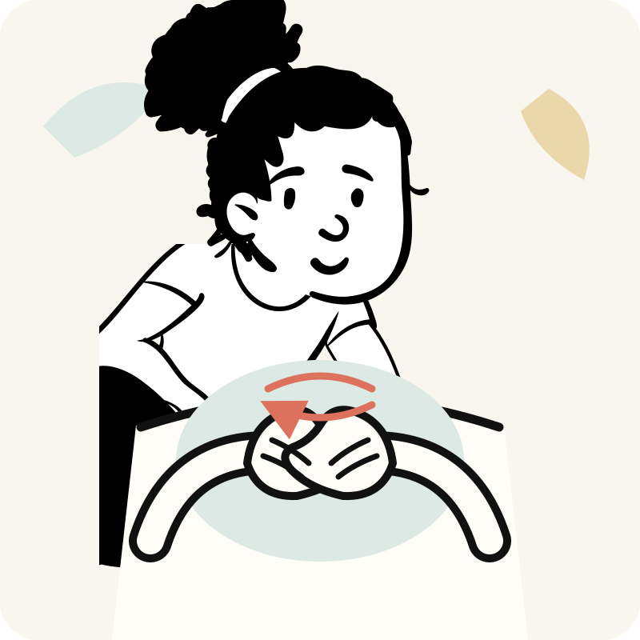
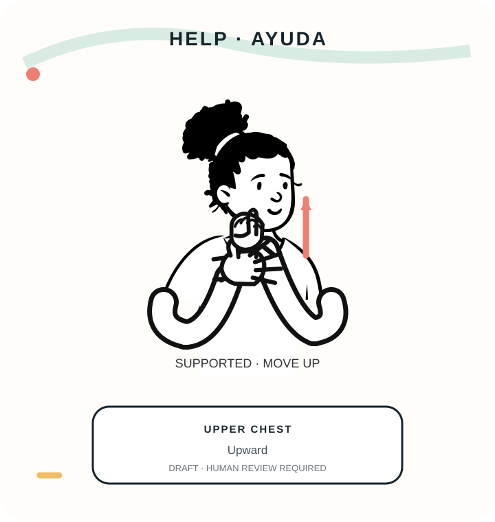
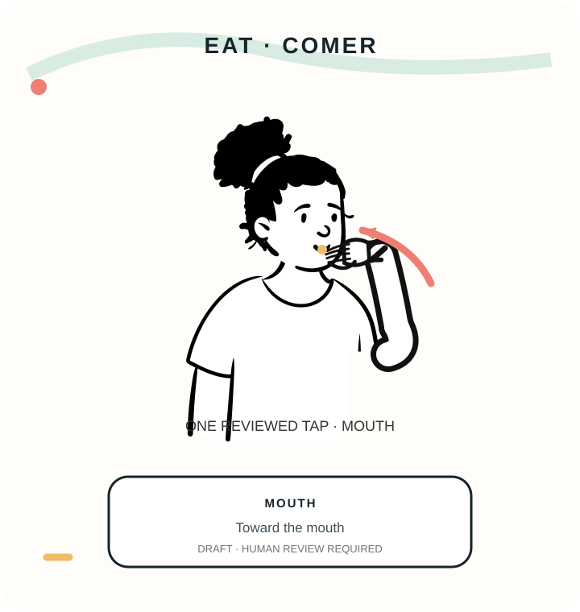
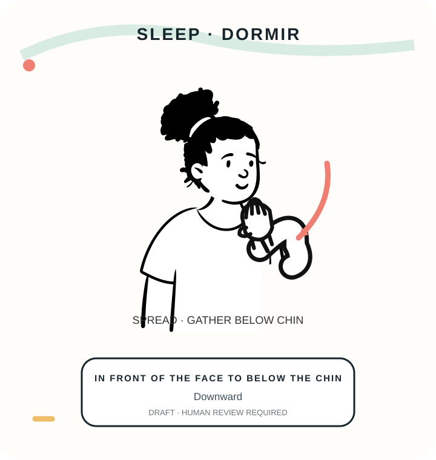
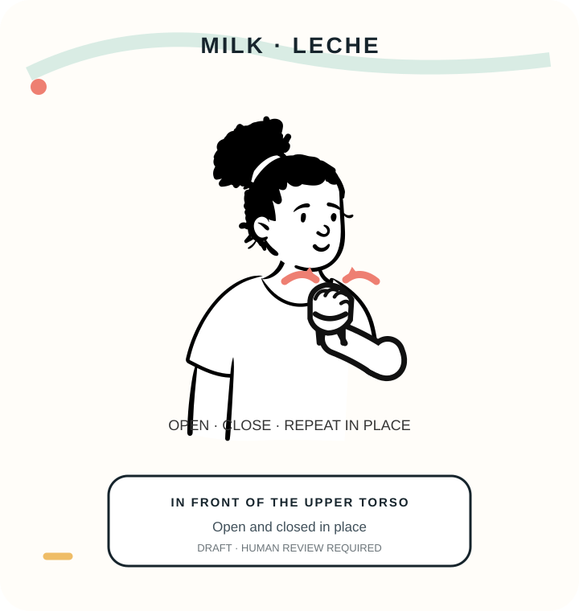
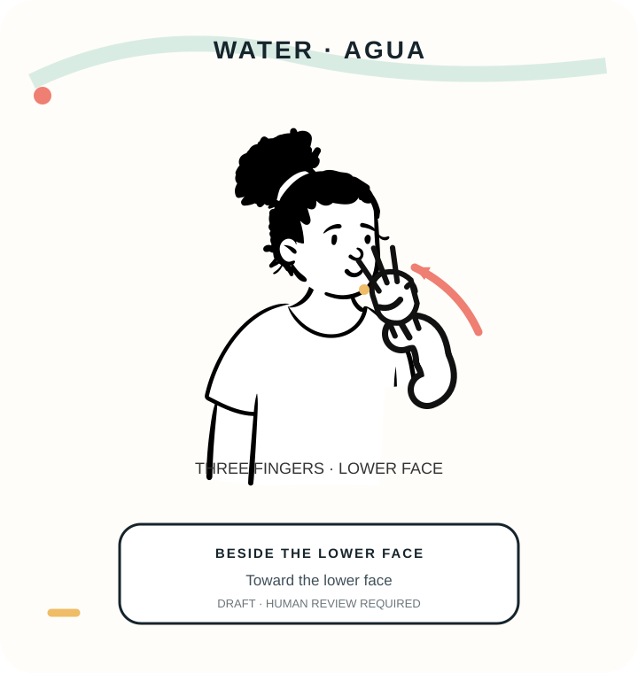

Sign videos
IncludedShort visual guides your families can use at home.
Kinder Signs workspace
Manage the Kinder Signs content available to your nursery.
Your plan
These are the services currently available to your nursery.
Short visual guides your families can use at home.
Printable cards that connect each sign with a familiar context.
Simple prompts for using signs during everyday routines.
Short shared-reading stories for signs with a prepared story.
Use repetition and rhythm to practise familiar signs through songs.
Your available content
Choose a sign and assign the materials available in your plan.

MÁS
Snack time · Mealtime · Playtime

AYUDA
Getting ready

COMER
Mealtime

DORMIR
Bedtime

LECHE
Milk time

AGUA
Drink break
Share content
Make the four sharing decisions, then review the summary.
Your active assignments
See what your groups and families can use, or update the materials at any time.
Your families
See the family access available across your groups.
Child roster
| Child | Group | Parents / caregivers | Active packs |
|---|---|---|---|
| Child A | Babies · 0–1 | Parent 1 + Parent 2 | Flashcards Extra caregiver |
| Child B | Babies · 0–1 | Parent 1 | Base only |
| Child C | Toddlers · 1–2 | Parent 1 + Parent 2 | Flashcards |
| Child D | Toddlers · 1–2 | Parent 1 | Stories |
| Child E | Preschool · 2–3 | Parent 1 + Parent 2 | Base only |
| Child F | Preschool · 2–3 | Parent 1 | Base only |
Services in your plan
Choose the extra services available to your groups or families.
This workspace uses synthetic child and family names. These six signs and format chips are a configured assignment-demo fixture; the canonical registry currently marks them unavailable for school distribution. Sharing changes session-only demo records and sends nothing to families. Add-on controls are illustrative and no real records are changed.